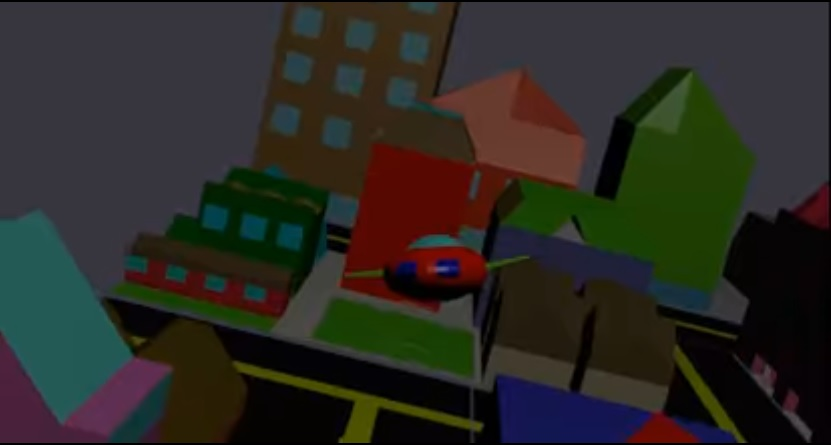

Tercera herramienta, nuestro trabajo consistio en crear una ciudad a traves de formas geometricas y tulizando la ayuda de blender y sus herramientas, para al final hacer que un pequqño avion de pocos poligonos pasara y "grabara" toda la ciudad con la ayuda de una trayectoria
Caracterizticas del trabajo
- Muy interactivo
- Puede llegar a ser muy tardado
- Gran variedad de herramientas para poder diseñar estructuras
